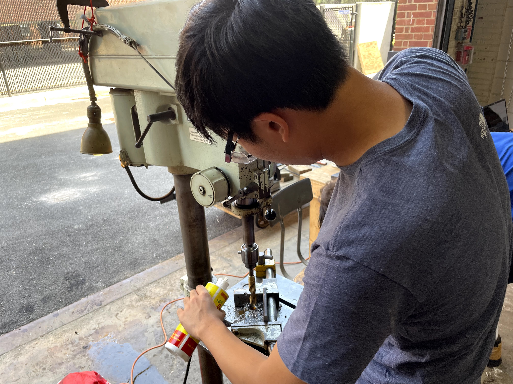

Designing and tolerancing various parts on the TBM
At the time, the competition date was closing very fast and our budget was limited. For a large part like the cutterhead, it would cut down on costs and lead time if holes were through holes and if they were not threaded. We could still fasten tools onto this cutterhead using castle nuts or another secure fastener, but it would take more time on our end to put it together (which was well worth it in our eyes).
Additionally, the thickness varied based on manufacturer's material availability. Due to a shortage of some specific alloys, we chose to pick A36 steel instead of the stronger 4140 stainless steel, making the part slightly thicker but arriving in time for the competition.
Being responsible for making both the drawings and the decisions on manufacturing/tolerancing, I had to meet with the responsible engineer of this part and discuss the potential design changes to accomodate for lead times and for the price of the part.
 Along with design work, I gained experience with machining with steel. Specifically, I machined 10 scraper bits out of 1018 cold rolled steel, using bandsaws and drill presses to create the shape and mounting points for these bits. The scraper bits are important for excavating out the soil in the compacted dirt in front of the tunnel boring machine.
The gears were challenging to design because they were one of the last components to be designed and fitted into the assembly. This lead to a lot of design choices being infeasible, and when the gears project was put in my purview, it was too late to deliberate on a better design. Therefore, the gearbox was a set of spur gears, but because there were only two gears there was large stresses on these two gears.
The material chosen was O1 tool steel, which is on the stronger end of steel alloys and meant for high stress, low RPM application like ours. Using calculations online, I ensured that the teeth would survive the torque delivered from the motors and the expected fatigue would not cause failure of the gear teeth.